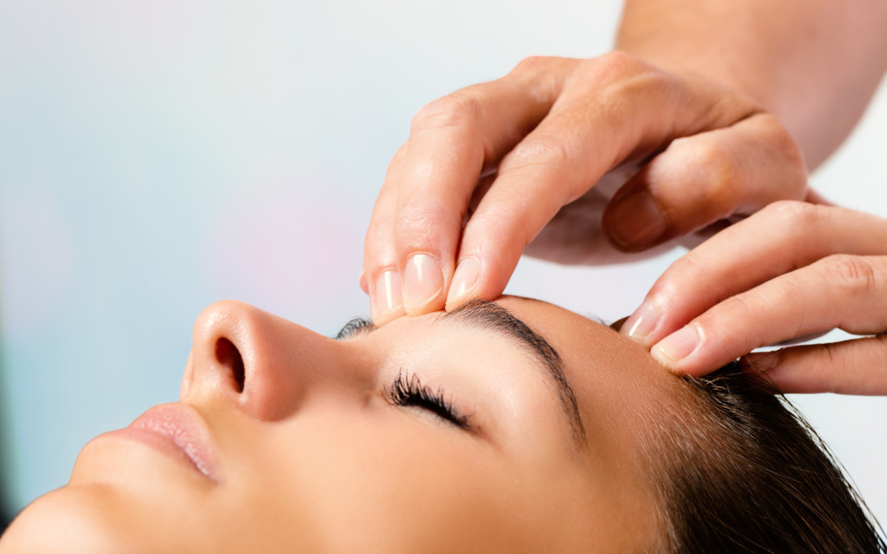

Las Barras de Access (Access Bars) es una técnica terapéutica que se enfoca en la energía del cuerpo y la mente.
Fue creada por Gary Douglas, y consiste en tocar suavemente 32 puntos en la cabeza, los cuales supuestamente representan diferentes aspectos de la vida, como la creatividad, la calma y la paz, la alegría, la tristeza, etc.
Estos puntos se relacionan con diferentes áreas de la vida, y el toque permitiría liberar situaciones, traumas y creencias limitantes, lo que permitiría a las personas experimentar una mayor claridad mental, reducir el estrés y ansiedad, mejorar las relaciones interpersonales y tener una mayor calidad de vida.